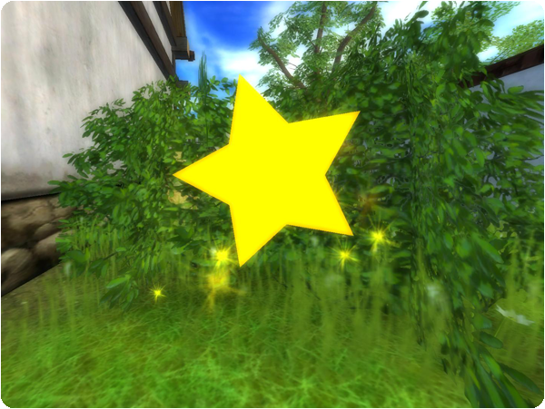
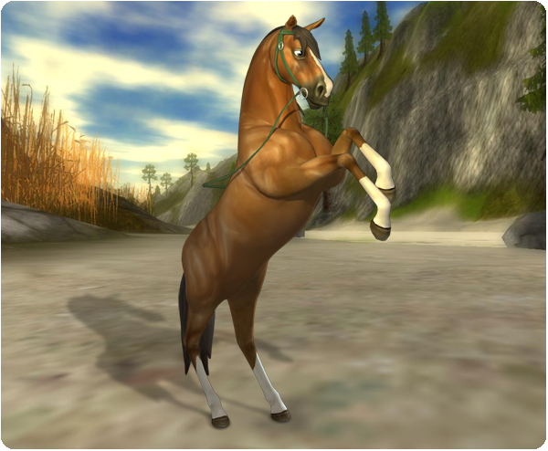

Üdvözlet mindenkinek!
Csillagok hullottak Jorvikra, és a te feladatod, hogy mindet összegyűjtsd!
Csillagok gyűjtése:
Csillagok hullottak az égből, és Jorvikra zuhantak. Próbálj meg minél többet megtalálni! Ha kinyitod a térképet, és rákattintasz a felfedezett területek fülre, láthatod, hogy mely területeken találhatsz csillagokat, és hányat gyűjtöttél már össze. Ha megtaláltad a csillagot, kattints rá, hogy összegyűjtsd!

Új western stílusú kantárok:
A western stílusú kantárok megérkeztek Jorvikra! Pinta Erődben, Moorland istállóban, Valedaleben, Silverglade faluban és Nyugat-Foki Halászfaluban találod meg őket!

Chat változások:
Számos kérés és a játékosokkal folytatott beszélgetések után jelentős változásokat hajtunk végre a Star Stable csevegésében. Az „Istálló Chat” helyébe egy „Globális Chat” nevű csatorna lépett. Az Istálló Chat-tel ellentétben, amely zavaros volt és csak az istálló területeken használható volt, a Globális Chat mostantól a Star Stable bármely pontjáról használható. Úgy gondoljuk, hogy ez megkönnyíti mindenki számára a kapcsolattartást és a segítségkérést, amikor és ahol szükségük van rá!
Annak érdekében, hogy a globális csevegés barátságos és spammentes környezet maradjon, csak a fizető Star Riderek, az életre szóló tagok vagy a korábban fizető Star Riderek használhatják a globális csatornát. Az ingyenes játékosok továbbra is olvashatják a csevegést, de nem vehetnek részt a globális csevegésben. Szeretnénk, ha a globális csevegés továbbra is remek hely maradna a Star Stable-ben lévő barátaiddal való kapcsolattartásra! Ha mindenki számára korlátlan hozzáférést biztosítanánk a globális csevegés funkcióhoz, ez sajnos lehetetlenné válna.
Üdvözlettel: